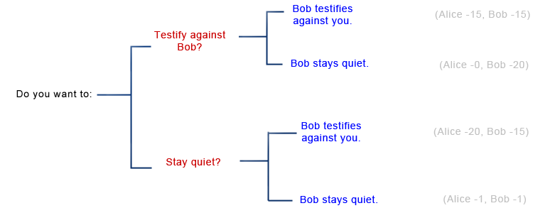
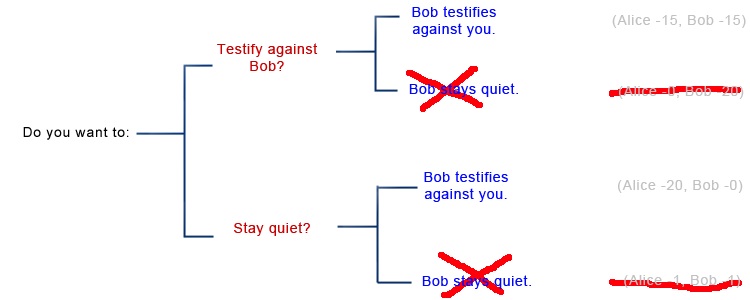
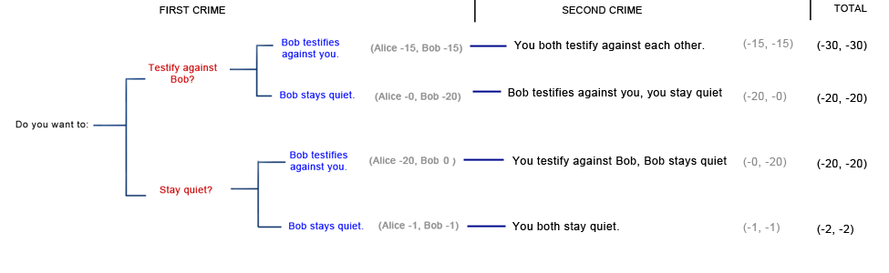
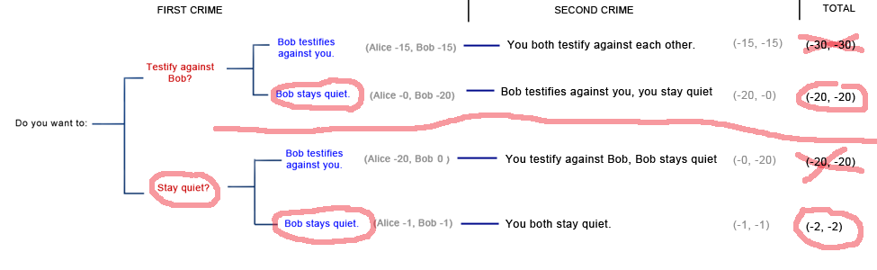

Introduction to Prisoners' Dilemma
Related to: Previous posts on the Prisoners' Dilemma
Sometimes Nash equilibria just don't match our intuitive criteria for a good outcome. The classic example is the Prisoners' Dilemma.
The police arrest two criminals, Alice and Bob, on suspicion of murder. The police admit they don't have enough evidence to convict the pair of murder, but they do have enough evidence to convict them of a lesser offence, possession of a firearm. They place Alice and Bob in separate cells and offer them the following deal:
“If neither of you confess, we'll have to charge you with possession, which will land you one year in jail. But if you turn state's witness against your partner, we can convict your partner of murder and give her the full twenty year sentence; in exchange, we will let you go free. Unless, that is, both of you testify against each other; in that case, we'll give you both fifteen years.”
Alice's decision tree looks like this (note that although Alice and Bob make their decisions simultaneously, I've represented it with Alice's decision first, which is a little sketchy but should illustrate the point):

If we use the same strategy we used as a chess player, we can cross out options where Bob decides to spend extra years in jail for no personal benefit, and we're left with this:

Seen like this, the choice is clear. If you stay quiet (“cooperate”), Bob turns on you, and you are left in jail alone for twenty years, wailing and gnashing your teeth. So instead, you both turn on each other (“defect”), and end up with a sentence barely any shorter.
Another way to “prove” that defection is the “right” choice places Bob's decision first. What if you knew Bob would choose to cooperate with you? Then your choice would be between defecting and walking free, or cooperating and spending a whole year in jail - here defection wins out. But what if you knew Bob would choose to defect against you? Then your choice would be between defecting and losing fifteen years, or cooperating and losing twenty - again defection wins out. Since Bob can only either defect or cooperate, and since defection is better in both branches, “clearly” defection is the best option.
But a lot of things about this solution seem intuitively stupid. For example, when Bob goes through the same reasoning, your “rational” solution ends up with both of you in jail for fifteen years, but if you had both cooperated, you would have been out after a year. Both cooperating is better for both of you than both defecting, but you still both defect.
And if you still don't find that odd, imagine a different jurisdiction where the sentence for possession is only one day, and the police will only take a single day off your sentence for testifying against an accomplice. Now a pair of cooperators would end up with only a day in jail each, and a pair of defectors would end up with nineteen years, three hundred sixty four days each. Yet the math still tells you to defect!
Unfortunately, your cooperation only helps Bob, and Bob's cooperation only helps you. We can think of the Prisoner's Dilemma as a problem: both you and Bob prefer (cooperate, cooperate) to (defect, defect), but as it is, you're both going to end out with (defect, defect) and it doesn't seem like there's much you can do about it. To “solve” the Prisoner's Dilemma would be to come up with a way to make you and Bob pick the more desirable (cooperate, cooperate) outcome.
One proposed solution to the Prisoner's Dilemma is to iterate it - to assume it will happen multiple times in succession, as if Alice and Bob are going to commit new crimes as soon as they both get out of prison. In this case, you can threaten to reciprocate; to promise to reward cooperation with future cooperation and punish defection with future defection. Suppose Alice and Bob plan to commit two crimes, and before the first crime both promise to stay quiet on the second crime if and only if their partner stays quiet on the first. Now your decision tree as Alice looks like this:

And your calculation of Bob's thought processes go like this:

Remember that, despite how the graph looks, your first choice and Bob's first choice are simultaneous: they can't causally affect each other. So as Alice, you reason like this: On the top, Bob knows that if you testify against him, his choice will be either to testify against you (leading to the branch where you both testify against each other again next time) or to stay quiet (leading to a branch where next time he testifies against you but you stay quiet). So Bob reasons that if you testify against him, he should stay quiet this time.
On the bottom, Bob knows that if you don't testify against him, he can either testify against you (leading to the branch where you testify against him next time but he stays quiet) or stay quiet (leading to the branch where you both stay quiet again next time). Therefore, if you don't testify against him, Bob won't testify against you.
So you know that no matter what you do this time, Bob won't testify against you. That means your choice is between branches 2 and 4: Bob testifying against you next time or Bob not testifying against you next time. You prefer Branch 4, so you decide not to testify against Bob. The dilemma ends with neither of you testifying against each other in either crime, and both of you getting away with very light two year sentences.
The teeny tiny little flaw in this plan is that Bob may be a dirty rotten liar. Maybe he says he'll reciprocate, and so you both stay quiet after the first crime. Upon getting out of jail you continue your crime spree, predictably get re-arrested, and you stay quiet like you said you would to reward Bob's cooperation last time. But at the trial, you get a nasty surprise: Bob defects against you and walks free, and you end up with a twenty year sentence.
If we ratchet up to sprees of one hundred crimes and subsequent sentences (presumably committed by immortal criminals who stubbornly refuse to be cowed by the police's 100% conviction rate) on first glance it looks like we can successfully ensure Bob's cooperation on 99 of those crimes. After all, Bob won't want to defect on crime 50, because I could punish him on crime 51. He won't want to defect on crime 99, because I could punish him on crime 100. But he will want to defect on crime 100, because he gains either way and there's nothing I can do to punish him.
Here's where it gets weird. I assume Bob is a rational utility-maximizer and so will always defect on crime 100, since it benefits him and I can't punish him for it. So since I'm also rational, I might as well also defect on crime 100; my previous incentive to cooperate was to ensure Bob's good behavior, but since Bob won't show good behavior on crime 100 no matter what I do, I might as well look after my own interests.
But if we both know that we're both going to defect on crime 100 no matter what, then there's no incentive to cooperate on crime 99. After all, the only incentive to cooperate on crime 99 was to ensure my rival's cooperation on crime 100, and since that's out of the picture anyway, I might as well shorten my sentence a little.
Sadly, this generalizes by a sort of proof by induction. If crime N will always be (defect, defect), then crime N-1 should also always be (defect, defect), which means we should defect on all of the hundred crimes in our spree.
This feat of reasoning has limited value in real life, where perfectly rational immortal criminals rarely plot in smoke-filled rooms to commit exactly one hundred crimes together; criminals who are uncertain exactly when their crime sprees will come to a close still have incentive to cooperate. But it still looks like we're going to need a better solution than simply iterating the dilemma. The next post will discuss possibilities for such a solution.
 Loading…
Loading… Subscribe to RSS Feed
Subscribe to RSS Feed
>We observe that politicians are happy to cut taxes (for people who can benefit them) if they personally get paid as much or more than before. Why would it be otherwise? Having the ability to take and redistribute someone else's money provides a concentrated benefit to the one doing the taking and redistributing. Cutting taxes produces a much more diffuse benefit. Concentrated benefits lead to Machiavellian behavior much more than diffuse benefits. It is possible, of course, to have an anti-taxes lobbying group which provides a concentrated benefit, but the overall balance between concentrated and diffuse benefits is on the side of the higher taxes. >(And any long-term interest, eg power for their family, should take the state of their civilization into account.) That would be a diffuse cost. The politician may care about the portion of the diffuse effectthat affects his family, but that's only a small portion of the total. If the politician makes policy based on which costs help him and his family and which ones hurt him and his family, the concentrated ones will win. The ones that affect all civilization, a small portion of which he actually cares about because it goes to his family, will lose.
by Jiro on Argument Screens Off Authority | 0 points